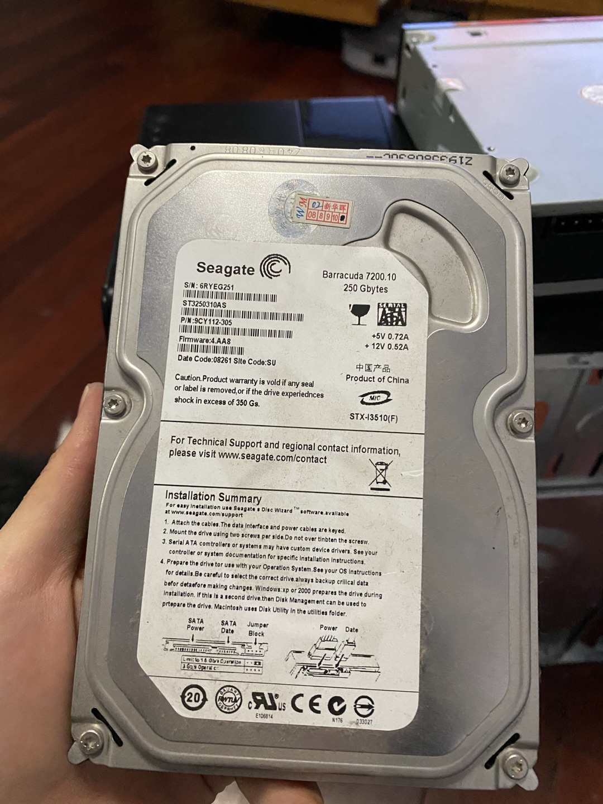

一年前前房主留下来了一台电脑的主机，不舍得扔。然后想了想还是把他拆了再扔了吧。拆完就想记录下，这一转眼，竟然过了一年。
主要组成部分
一个主机主要包含：
1、硬盘
2、内存条
3、光驱
4、电源
5、CPU
6、CPU风扇
7、显卡
8、数据线
9、主板
这7个部分。下面分别介绍下这几个部分的功能，以及最后我拆出来长啥样。
电源
为其他硬件提供电力
硬盘
硬盘是硬盘驱动器的简称，他的接口用来连接电源和数据线。
硬盘可以长期存储大量数据

光驱
个人感觉光驱最难拆，光驱是光盘驱动器，前端是光盘的出口，后端是电源和数据线的接口。
光驱能读取光盘中的数据。
数据线
是数据传递的高速公路。
显卡
他的接口用来连接显示器等输出设备，显卡是输出视频新号的设备。
内存条
内存条是存放当前使用数据的场所。
CPU风扇
用来给高速运转的CPU降温
CPU
CPU是个小方块，CPU是中央处理器，是计算机最核心的部件。
主板
主板用来连接其他硬件设备。
总结
计算机除了主机外，还有很多外部设备，比如输入设备键盘、鼠标。输出设备耳机、显示屏。
主机后面有很多接口，常用的有
1、电源接口
2、PS/2 鼠标键盘接口
3、VGA视频输出接口
4、USB接口
5、麦克风接口
6、耳机接口